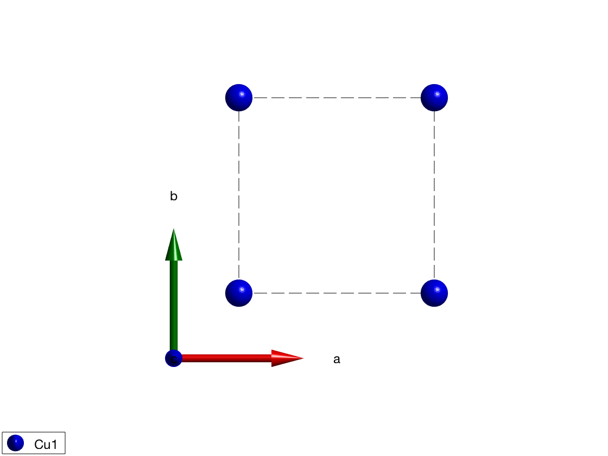
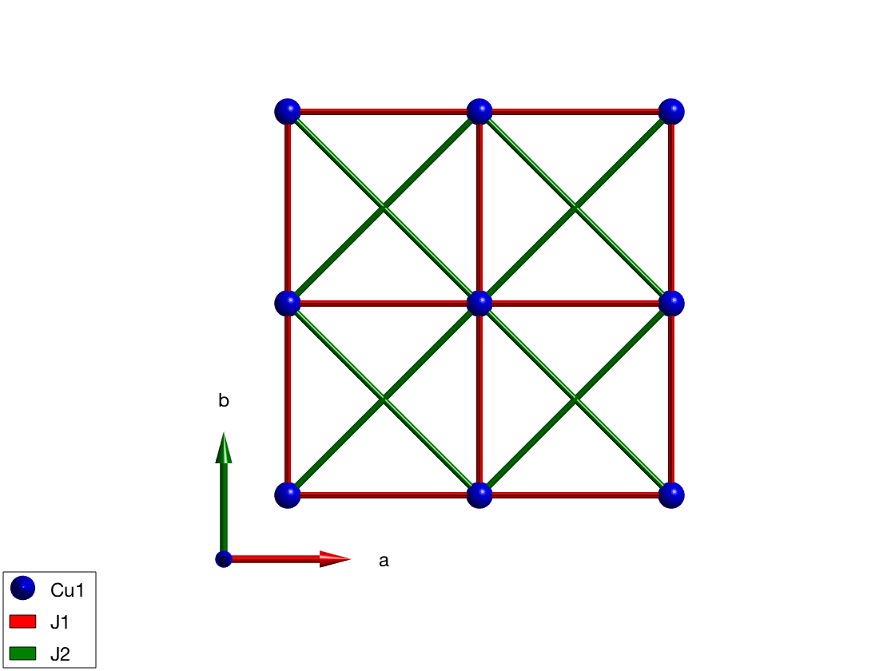
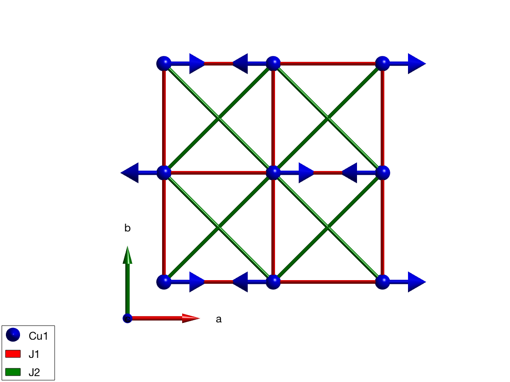
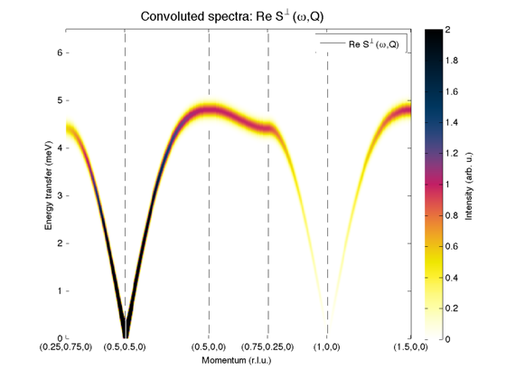

Contents
Antiferromagnetic square lattice
We define a square lattice in the ab plane, with Cu+ ions with S=1 spin.
AFsq = spinw; AFsq.fileid(0) AFsq.genlattice('lat_const',[3 3 10],'angled',[90 90 90],'sym',0) AFsq.addatom('r',[0 0 0],'S', 1,'label','Cu1','color','b'); display('Atomic positions as columns:') AFsq.atom.r plot(AFsq)
Atomic positions as columns:
ans =
0
0
0
 Couplings
We create first neighbor couplings in the ab plane and plot the bonds. You can click on the different bonds to get the value of the corresponding matrix.
AFsq.gencoupling('maxDistance',9) display('Rows: dlx, dly, dlz, at1, at2, idx, ma1, ma2, ma3') AFsq.couplingtable.table AFsq.coupling display('Bond vectors (first three rows) and bond distances') AFsq.couplingtable.bondv AFsq.addmatrix('label','J1','value',1,'color','red') AFsq.addmatrix('label','J2','value',-0.1,'color','green') AFsq.addcoupling('mat','J1','bond',1) AFsq.addcoupling('mat','J2','bond',2) plot(AFsq,'range',[2 2 0.5],'zoom',-1)
Rows: dlx, dly, dlz, at1, at2, idx, ma1, ma2, ma3
ans =
Columns 1 through 6
1 0 1 1 2 0
0 1 -1 1 0 2
0 0 0 0 0 0
1 1 1 1 1 1
1 1 1 1 1 1
1 1 2 2 3 3
0 0 0 0 0 0
0 0 0 0 0 0
0 0 0 0 0 0
Columns 7 through 12
1 2 2 1 2 2
-2 -1 1 2 -2 2
0 0 0 0 0 0
1 1 1 1 1 1
1 1 1 1 1 1
4 4 4 4 5 5
0 0 0 0 0 0
0 0 0 0 0 0
0 0 0 0 0 0
Columns 13 through 14
3 0
0 3
0 0
1 1
1 1
6 6
0 0
0 0
0 0
ans =
dl: [3x14 int32]
atom1: [1 1 1 1 1 1 1 1 1 1 1 1 1 1]
atom2: [1 1 1 1 1 1 1 1 1 1 1 1 1 1]
idx: [1 1 2 2 3 3 4 4 4 4 5 5 6 6]
mat_idx: [3x14 int32]
type: [3x14 int32]
rdip: 0
Bond vectors (first three rows) and bond distances
ans =
Columns 1 through 7
1.0000 0 1.0000 1.0000 2.0000 0 1.0000
0 1.0000 -1.0000 1.0000 0 2.0000 -2.0000
0 0 0 0 0 0 0
3.0000 3.0000 4.2426 4.2426 6.0000 6.0000 6.7082
Columns 8 through 14
2.0000 2.0000 1.0000 2.0000 2.0000 3.0000 0
-1.0000 1.0000 2.0000 -2.0000 2.0000 0 3.0000
0 0 0 0 0 0 0
6.7082 6.7082 6.7082 8.4853 8.4853 9.0000 9.0000
 Magnetic structure
For weak second neighbor ferromagnetic interaction the magnetic structure is Neel type, with the following parameters:
- ordering wave vector k = (1/2 1/2 0)
- spin are in arbitrary plane, lets point along the S = (1 0 0) direction
- normal to the spin vectors n = (0 0 1)
- magnetic supercell is 2x2x1
We use magnetic supercell, since the 2*k equal to a reciprocal lattice vector. In this case the spin wave code cannot use the incommensurate mode, thus we have to create a zero-k structure, that is a 2x2x1 magnetic supercell.Note that the sw.genmagstr() automatically normalizes the spin vectors to the spin value of the magnetic atoms.
AFsq.genmagstr('mode','helical','k',[1/2 1/2 0],'n',[0 0 1], 'S',[1; 0; 0],'nExt',[1 1 1]); display('Magnetic structure with spins 1 2 ... as columns, xyz as rows:') AFsq.mag_str AFsq.mag_str.S display('Magnetic atoms as columns:') AFsq.magtable.R display('Magnetic spins:') AFsq.magtable.M display('Ground state energy (meV/spin)') AFsq.energy plot(AFsq,'range',[2 2 1])
Magnetic structure with spins 1 2 ... as columns, xyz as rows:
ans =
N_ext: [1 1 1]
k: [0.5000 0.5000 0]
S: [3x1 double]
n: [0 0 1]
ans =
1
0
0
Magnetic atoms as columns:
ans =
0
0
0
Magnetic spins:
ans =
1
0
0
Ground state energy (meV/spin)
ans =
-2.2000
 Spin wave spectrum
We calculate the spin wave spectrum and correlatino function along several linear q-scans in reciprocal space defined by the Qcorner corner points. The last number in the cell defines the number of steps in each linear scan.
Qcorner = {[1/4 3/4 0] [1/2 1/2 0] [1/2 0 0] [3/4 1/4 0] [1 0 0] [3/2 0 0] 100};
sqSpec = AFsq.spinwave(Qcorner, 'hermit', false);
sqSpec = sw_neutron(sqSpec);
sqSpec = sw_egrid(sqSpec,'Evect',linspace(0,6.5,500));
figure
sw_plotspec(sqSpec,'mode',3,'dashed',true,'dE',0.25)
caxis([0 4])
Warning: The two times the magnetic ordering wavevector 2*km = G, reciproc lattice vector, use magnetic supercell to calculate spectrum!
Written by Bjorn Fak & Sandor Toth 06-June-2014